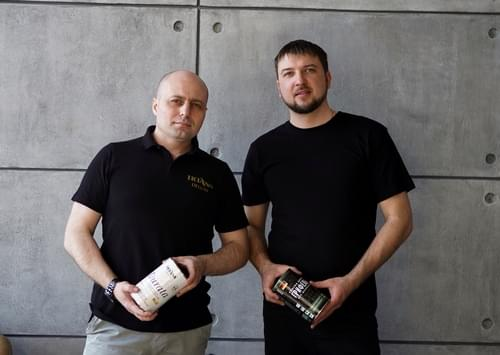

Sorrento (Сорренто) - Штукатурка с волокнами TICIANA DELUXE
Информация о товаре
{kind=link}
{kind=link}
{kind=link}
{kind=link}
Почему выбирают Sorrento (Сорренто) - Штукатурка с волокнами TICIANA DELUXE
Область применения
Предназначена для получения рельефного покрытия на бетонных, оштукатуренных и других минеральных поверхностях внутри помещения.
Преимущества
Не требует идеальной подготовки стен, скрывает мелкие дефекты. Реалистично воссоздает внешний вид саманных штукатурок. Обладает незначительной усадкой при высыхании. Позволяет получить высокий рельеф без образования трещин. Наличие целлюлозных волокон придает материалу армирующие свойства. Обладает высокой износостойкостью и белизной. Экологически безопасный продукт. Отличается повышенной прочностью, практичностью и долговечностью.
Мастер классы
 Travertino (декоративная штукатурка c эффектом травертина). Инструкция по нанесению
Travertino (декоративная штукатурка c эффектом травертина). Инструкция по нанесению
Travertino (декоративная штукатурка c эффектом травертина). Инструкция по нанесению
Оставьте заявку на консультацию
Рассчитаем затраты на ремонт вашего помещения и поможем в подборе материалов